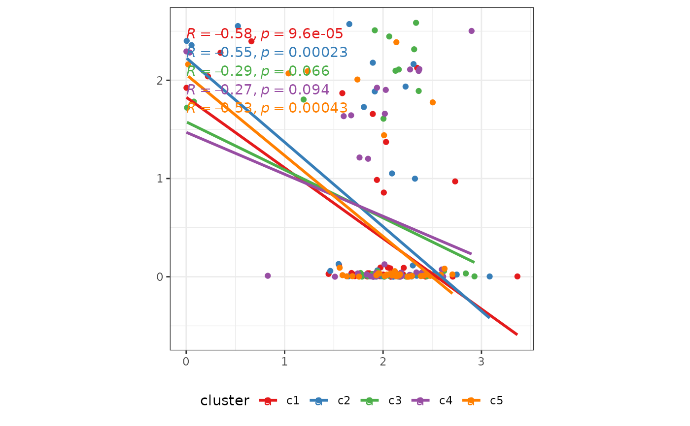
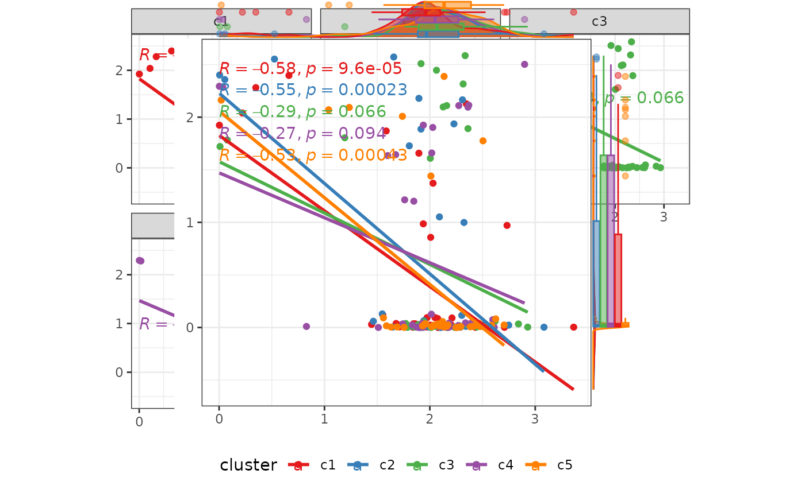

Plot expression data in a scatter plot
Usage
plot_scatter(
data,
smoothing_method = "lm",
group_colors = RColorBrewer::brewer.pal(9, "Set1"),
title_color = "black",
title = NULL,
col_title = NULL,
row_title = NULL,
legend_title = NULL,
legend_position = "bottom",
margins = "both",
marginal_type = NULL,
margins_size = 10,
compute_correlation = TRUE,
compute_correlation_method = "pearson",
keep_aspect_ratio = TRUE,
facet = FALSE,
se = FALSE,
pointdensity = TRUE
)Arguments
- data
Input data.
- smoothing_method
Method for smoothing curve,
lmorloess.- group_colors
Colors for different groups.
- title_color
Color for the title.
- title
Main title for the plot.
- col_title
Title for the x-axis.
- row_title
Title for the y-axis.
- legend_title
Title for the legend.
- legend_position
The position of legend.
- margins
The position of marginal figure ("both", "x", "y").
- marginal_type
The type of marginal figure (
density,histogram,boxplot,violin,densigram).- margins_size
The size of marginal figure, note the bigger size the smaller figure.
- compute_correlation
Whether to compute and print correlation on the figure.
- compute_correlation_method
Method to compute correlation (
pearsonorspearman).- keep_aspect_ratio
Logical value, whether to set aspect ratio to 1:1.
- facet
Faceting variable. If setting TRUE, all settings about margins will be inalidation.
- se
Display confidence interval around smooth.
- pointdensity
Plot point density when only provide 1 cluster.
Examples
data("example_matrix")
test_data <- data.frame(
example_matrix[1:200, c(1, 7)],
c = c(
rep("c1", 40),
rep("c2", 40),
rep("c3", 40),
rep("c4", 40),
rep("c5", 40)
)
)
p1 <- plot_scatter(
test_data
)
p2 <- plot_scatter(
test_data,
marginal_type = "boxplot"
)
p1 + p2

p3 <- plot_scatter(
test_data,
facet = TRUE
)
p3
p4 <- plot_scatter(
test_data[, 1:2],
marginal_type = "histogram"
)
p4
